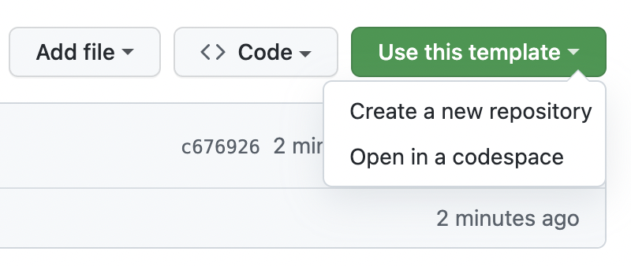
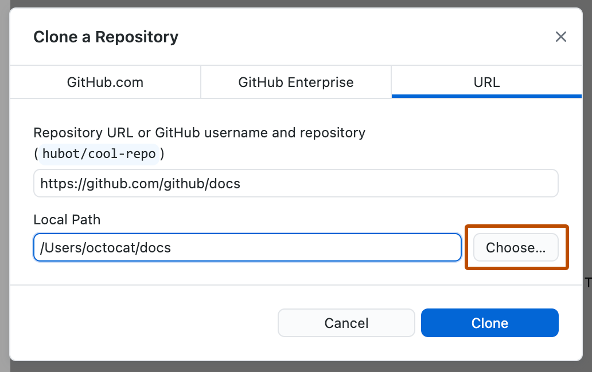

- 1. 準備
- 2. 編集
- 3. 公開
利用環境とテンプレートを準備する
必要なアカウントとアプリを用意し、自分用リポジトリをChatGPTから参照できるようにして、パソコンへcloneします。
利用環境を準備する
GitHub、GitHub Desktop、Windows版ChatGPTデスクトップアプリへサインインします。この段階では、まだCodexへ切り替えません。
GitHubでアカウントを作成します。GitHubは、ホームページのファイルと変更履歴をインターネット上で管理するサービスです。
GitHub Desktop公式ダウンロードページから、Windows版GitHub Desktopをインストールします。
GitHub Desktopを開き、ブラウザのGitHubと同じGitHubアカウントでサインインします。
OpenAI公式のWindows版案内を開き、案内に従ってChatGPTデスクトップアプリをインストールします。
ChatGPTデスクトップアプリを起動し、普段使用するChatGPTアカウントでサインインします。
画面左上の選択がChatGPTであることを確認し、通常のチャットを新しく開始できることを確かめます。
自分用のテンプレートを準備する
配布用テンプレートから自分のリポジトリを作り、ChatGPTへ接続してから、GitHub Desktopでパソコンへcloneします。
- リモートリポジトリ
- GitHub上に保存されているホームページのファイルと変更履歴です。
- ローカルリポジトリ
- GitHub Desktopでcloneして、パソコン上へ保存した作業用フォルダです。
自分用リポジトリを作る
academeia/hp_templateをブラウザで開きます。-
Use this templateを押し、新しいリポジトリを作成する項目を選びます。

GitHub Docsの公式画像：Use this templateからCreate a new repositoryを選びます。 -
所有者、リポジトリ名、公開範囲を確認します。公開してよい内容であることを確認してPublicを選び、作成します。

GitHub Docsの公式画像：所有者とリポジトリ名を確認し、公開範囲を選びます。
自分用リポジトリをChatGPTへ接続する
この接続は、ChatGPTがテンプレートの構造や作業条件を読み、研究室資料を整理するための読み取り専用の参照に使います。ファイルの変更、テスト、Commit、Pushは、Codexがパソコン上のローカルリポジトリに対して行います。
ChatGPTデスクトップアプリを開き、アカウントメニューからSettingsを開きます。
Appsを開き、アプリ一覧からGitHubを探して接続操作を選びます。
GitHub側でChatGPTアプリを認可します。許可内容を確認し、必要な範囲だけを選びます。
テンプレートから作成した自分用リポジトリだけを、ChatGPTから参照を許可するリポジトリとして選びます。配布元の
academeia/hp_templateや無関係なリポジトリを選ぶ必要はありません。ChatGPTへ戻り、GitHubが接続済みで、自分用リポジトリを参照対象として選べることを確認します。
自分用リポジトリをパソコンへcloneする
-
GitHub Desktopで自分用リポジトリを選び、cloneの操作を開きます。Clone画面で対象リポジトリとLocal Pathの保存場所を確認し、Cloneを押します。

GitHub Docsの公式画像：画面の細かな配置は異なる場合がありますが、リポジトリ、Local Path、Cloneの3点を確認します。 GitHub Desktop左上のリポジトリ一覧から、いまcloneした自分用リポジトリを選びます。
RepositoryメニューからShow in Explorerを選び、保存フォルダを開きます。
開いたフォルダに、
index.html、sample.html、prompts、assets、README.mdが含まれていることを確認します。